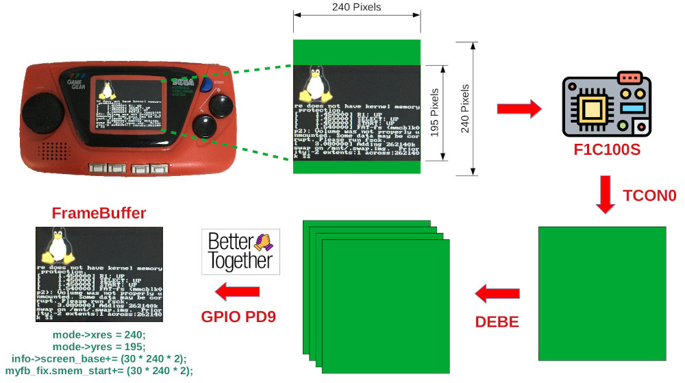
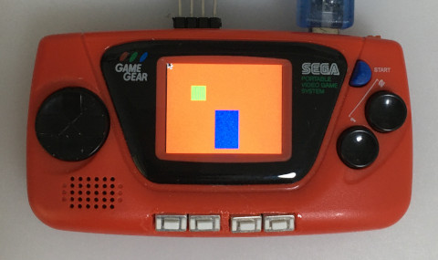

Steward
分享是一種喜悅、更是一種幸福
掌機 - Game Gear Micro - Framebuffer架構
司徒發覺有必要先把FrameBuffer的東西紀錄下來，當作以後的參考資料，因為GGM的屏是一個很奇耙的設計，解析度是240x240，但是，顯示區域則是240x195，為此，司徒在FrameBuffer驅動做了一些處理，從下圖司徒畫的圖可以看到，F1C100S的TCON0是以240x240做更新處理，DEBE則使用4個Layers做處理，解析度都是240x240，資料輸出給屏的機制是使用TE中斷腳位觸發，因此，保證從F1C100S給的資料不會有Buffer覆蓋問題(閃屏)，但是，最後回報給User Application則是240x195

為何是以240x195回報給User Application呢？因為，有效顯示區域只有240x195，為了不讓User Application花費多餘力氣處理偏移問題，這也是為何Linux Logo可以正確顯示在GGM屏幕顯示區域的原因，因此，SDL程式可以直接使用240x195製作
#include <stdio.h>
#include <stdlib.h>
#include <SDL.h>
int main(int argc, char** argv)
{
SDL_Rect rt = { 0 };
SDL_Surface *screen = NULL;
SDL_Init(SDL_INIT_VIDEO);
screen = SDL_SetVideoMode(240, 195, 16, SDL_SWSURFACE);
SDL_FillRect(screen, &screen->clip_rect, SDL_MapRGB(screen->format, 0xff, 0x00, 0x00));
rt.x = 50;
rt.y = 50;
rt.w = 30;
rt.h = 30;
SDL_FillRect(screen, &rt, SDL_MapRGB(screen->format, 0x00, 0xff, 0x00));
rt.x = 100;
rt.y = 100;
rt.w = 50;
rt.h = 80;
SDL_FillRect(screen, &rt, SDL_MapRGB(screen->format, 0x00, 0x00, 0xff));
SDL_Flip(screen);
SDL_Delay(3000);
SDL_Quit();
return 0;
}
編譯好的程式還需要設定如下3個環境變數：
# export SDL_NOMOUSE=1 # export SDL_FB_BROKEN_MODES=1 # export SDL_VIDEODRIVER=fbcon
SDL_NOMOUSE：不需要檢查滑鼠
SDL_FB_BROKEN_MODES：將240x195解析度加入預設清單
SDL_VIDEODRIVER：顯示驅動使用FrameBuffer
完成

P.S. 對於需要Double Buffer或者Quadruple Buffer則需要自己做Map